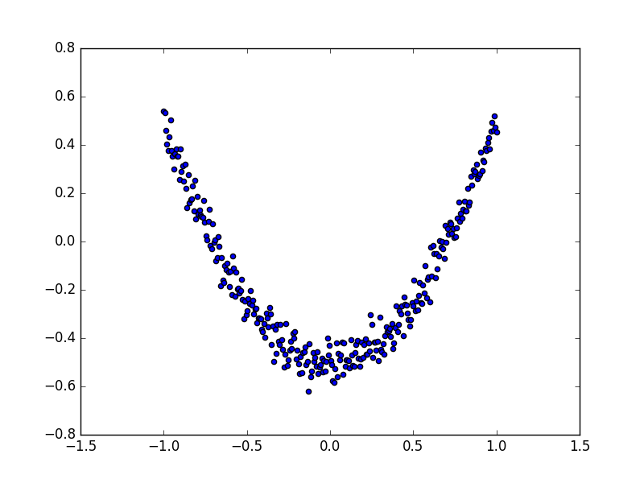
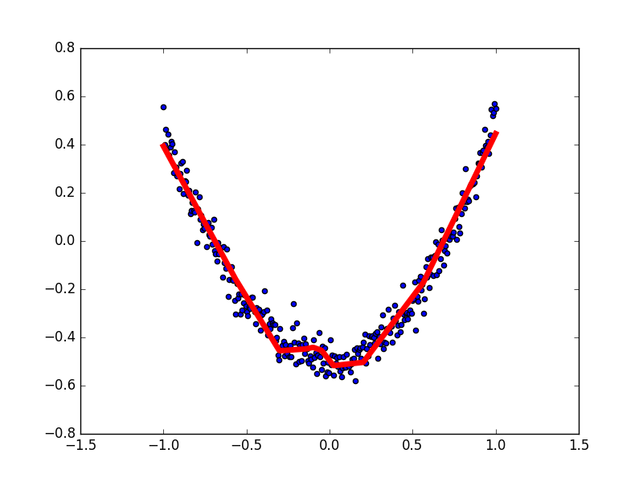

例子3 结果可视化
作者: 赵孔亚 编辑: 莫烦 2016-11-03
学习资料:
matplotlib 可视化
构建图形，用散点图描述真实数据之间的关系。
（注意：plt.ion()用于连续显示。）
# plot the real data
fig = plt.figure()
ax = fig.add_subplot(1,1,1)
ax.scatter(x_data, y_data)
plt.ion()#本次运行请注释，全局运行不要注释
plt.show()
散点图的结果为：

接下来，我们来显示预测数据。
每隔50次训练刷新一次图形，用红色、宽度为5的线来显示我们的预测数据和输入之间的关系，并暂停0.1s。
for i in range(1000):
# training
sess.run(train_step, feed_dict={xs: x_data, ys: y_data})
if i % 50 == 0:
# to visualize the result and improvement
try:
ax.lines.remove(lines[0])
except Exception:
pass
prediction_value = sess.run(prediction, feed_dict={xs: x_data})
# plot the prediction
lines = ax.plot(x_data, prediction_value, 'r-', lw=5)
plt.pause(0.1)
最后，机器学习的结果为：

如果你觉得这篇文章或视频对你的学习很有帮助, 请你也分享它, 让它能再次帮助到更多的需要学习的人. 莫烦没有正式的经济来源, 如果你也想支持 莫烦Python 并看到更好的教学内容, 赞助他一点点, 作为鼓励他继续开源的动力.